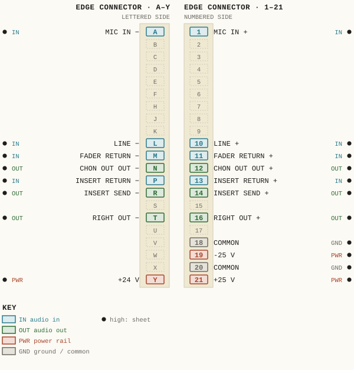
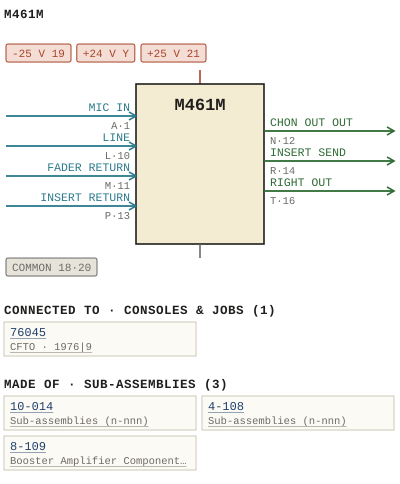

M461M
| Type | module |
| Category | INPUT-PRE-AMPS |
| Try it | simulator & front panel · download package (zip) |
| Earliest dated evidence | 1976|9 — title block date |
| Evidence | "8 SEPT 76" on 1975 - M461M - 461-01-002 - SOLO CONTROL SOLO COMMON CONTROL.jpg |
| Confidence | high |
| All years found | 1976|9 |
| Used in jobs | 76045 (1976|9) |
| Variants | M461 |
| Folder | Modules/INPUT-PRE-AMPS/M461M |
Connections and circuit (ideal SPICE model)
Drawn live from its RTO-144 connections: run the generator, turn the gain, watch the VU. Open the netlist to see how the model is built.
Pictures


M461M.pinout.svg

M461M.connections.svg 1975 - M461M - 461-01-002 - SOLO CONTROL SOLO COMMON CONTROL (2).jpg
1975 - M461M - 461-01-002 - SOLO CONTROL SOLO COMMON CONTROL (2).jpg 1975 - M461M - 461-01-002 - SOLO CONTROL SOLO COMMON CONTROL.jpg
1975 - M461M - 461-01-002 - SOLO CONTROL SOLO COMMON CONTROL.jpg 1975 - M461M - 461-02-004 - CONTRCL CONTROL.jpg
1975 - M461M - 461-02-004 - CONTRCL CONTROL.jpg 1975 - M461M - 461-04-008 - INPUT MODULE ASSEMBLY.jpg
1975 - M461M - 461-04-008 - INPUT MODULE ASSEMBLY.jpg 1975 - M461M - 461-04-008 - MOD ICKD USED.jpg
1975 - M461M - 461-04-008 - MOD ICKD USED.jpg 1975 - M461M - P1.jpg
1975 - M461M - P1.jpg 1975 - M461M - P2.jpg
1975 - M461M - P2.jpg 1975 - M461M - P3.jpg
1975 - M461M - P3.jpg 1975 - M461M - P4.jpg
1975 - M461M - P4.jpg 1975 - M461M - WBS 461M Pinouts.jpg
1975 - M461M - WBS 461M Pinouts.jpg 1975 - M461M - WBS 461M Schematic 1.jpg
1975 - M461M - WBS 461M Schematic 1.jpg 1975 - M461 - WBS 461 Hookup Info.jpg
1975 - M461 - WBS 461 Hookup Info.jpgPinout & connections
Each contact as its own documents name it: 19 named (19 high confidence). An empty slot is a contact no page names. Hover a contact for its source; the table under the drawing lists them.
pinout (SVG) · connections (SVG) · pins (JSON)
Pin evidence — 19 contacts
| Pin | Signal | Kind | Confidence | Read from | Source |
|---|---|---|---|---|---|
| A | MIC IN | audio in | high | rto-144 | M461M.rto144.json, p. 1 |
| 1 | MIC IN | audio in | high | rto-144 | M461M.rto144.json, p. 1 |
| L | LINE | audio in | high | rto-144 | M461M.rto144.json, p. 1 |
| 10 | LINE | audio in | high | rto-144 | M461M.rto144.json, p. 1 |
| M | FADER RETURN | audio in | high | rto-144 | M461M.rto144.json, p. 1 |
| 11 | FADER RETURN | audio in | high | rto-144 | M461M.rto144.json, p. 1 |
| N | CHON OUT OUT | audio out | high | rto-144 | M461M.rto144.json, p. 1 |
| 12 | CHON OUT OUT | audio out | high | rto-144 | M461M.rto144.json, p. 1 |
| P | INSERT RETURN | audio in | high | rto-144 | M461M.rto144.json, p. 1 |
| 13 | INSERT RETURN | audio in | high | rto-144 | M461M.rto144.json, p. 1 |
| R | INSERT SEND | audio out | high | rto-144 | M461M.rto144.json, p. 1 |
| 14 | INSERT SEND | audio out | high | rto-144 | M461M.rto144.json, p. 1 |
| T | RIGHT OUT | audio out | high | rto-144 | M461M.rto144.json, p. 1 |
| 16 | RIGHT OUT | audio out | high | rto-144 | M461M.rto144.json, p. 1 |
| 18 | COMMON | ground / common | high | rto-144 | M461M.rto144.json, p. 1 |
| 19 | -25 V | power rail | high | rto-144 | M461M.rto144.json, p. 1 |
| 20 | COMMON also: COMMON (rto-144) | ground / common | high | rto-144 | M461M.rto144.json, p. 1 |
| Y | +24 V | power rail | high | rto-144 | M461M.rto144.json, p. 1 |
| 21 | +25 V | power rail | high | rto-144 | M461M.rto144.json, p. 1 |
Physical manual inventory
| Item | Location | Status | Scanned |
|---|---|---|---|
| M461M | Recently scanned and stiched by WB |
Photos & scans (11)


Sub-assemblies & parts used (3)
| Item | What | Family | Year | How we know |
|---|---|---|---|---|
| 10-014 | Sub-assemblies (n-nnn) | 1988|21 | named in its manual | |
| 4-108 | Sub-assemblies (n-nnn) | named in its manual | ||
| 8-109 | Booster Amplifier Component Layout | Sub-assemblies (n-nnn) | 1974|7 | named in its manual |
Parts list — board M461M (45 parts)
From 1975 - M461M - P3.jpg, page 1 (scanned); also in timelines/data/bom.csv.
| Ref | Part | Value | Manufacturer | Mfr part no. |
|---|---|---|---|---|
| R55 | delete) | |||
| R56 | Resistor #w 5% 470K Phi lips | |||
| R57 | de lete) | |||
| R58 | delete | |||
| R59 | de lete) | |||
| R60 | Resistor #w 5% IK Phi Tips | |||
| SW2 | Schadow WBS | 11-002 | ||
| SW3 | clare-Pendar SB | 2310 | ||
| SW6 | delete) | |||
| SW7 | Switch Schadow WBS | 11-002 | ||
| SW8 | de lete) | |||
| SW10 | Swi tch Schadow WBS | 11-005 | ||
| SW12 | WBS | 11-004 | ||
| SW13 | (delete) | |||
| R20 | Resi stor #w 15K Phi lips | 5% | ||
| R25 | (delete | |||
| R26 | de lete | |||
| R27 | delete | |||
| R28 | delete E | |||
| R29 | Resistor %W 5% 4K7 Phi lips | 6 | ||
| R3 | R30 de lete delete . { . | |||
| R32 | de lete | |||
| R33 | de lete) _ " | |||
| R34 | Resistor #W 5% 5.60 Phi ips Sf | |||
| R35 | delete) | 7 | ||
| R36 | Resi stor #w 5% 5.60 Philips | |||
| R38 | (delete) ; | |||
| R39 | delete) | |||
| R42 | delete | |||
| R43 | de lete | |||
| R44 | de lete) | |||
| R45 | Potentiometer dual A/ B WBS | 10-003 | ||
| R49 | delete) : | |||
| R50 | delete 4` | |||
| R5I | de lete) 2` - - ~. | |||
| R52 | de lete | |||
| R53 | de lete) | |||
| R54 | Potentiometer, ing le A/ B WBS | 10-014 | ||
| DS2 | Light Bu b, V 387 | 28 | ||
| R12 | de lete) . ` '~ . | |||
| R13 | Resi stor #w 5% Phi ]ips ;.^ 7{ | 15K | ||
| R15 | (delete) | |||
| R16 | (delete) .o 'as | |||
| R17 | Resi stor #w 59 Philips | 15K | ||
| R19 | (delete) |
Consoles & jobs it is connected to (1)
Their own drawings name this module.
| Job | Year | Drawing | Page |
|---|---|---|---|
| 76045 | 1976|9 | 1976 - 76045 - 01-010b.pdf | 1 |
Named in other drawings & documents (2)
| File | Page |
|---|---|
| 19xx - RTO-144 - Module RTO-144 Jumper calculator.xlsx | 1 |
| 1975 - M461 - WBS 461 Hookup Info.jpg | 1 |
From the manuals
Each manual split into its sections. Text that is the same in many Ward-Beck manuals (warranty, address, standard notes) is kept once on the Boilerplate page and linked.
Parts list (text) (1)
Parts List — 147 words · 1975 - M461M - P1.jpg, page 1
M46 IM INPUT MODULE PART DESCR PTION MFG MFG PART NUMBER Capacitor 22 uF/25 V Siemens 41313-45226-Z 8 0.022 uF CR Diode CR2 CR3 CRL CRS LED red Aselco cQ92-MC- 223M 1N4003 IRC Fairchild FLV 117 DS2 Light Bu b, 28 V 387 Transistor Nat_ Semic. PN 3569 PN 3645 TIP 29B TIP 30B PN 3569
8 Q6 Resistor #w 5% 15K I5K 3 3.30 , 30 30 R6 3 .30 R7 7 ` 15K R8 5K R9 R10 e . 15K R ]1 (delete R12 de lete) R13 Resi stor #w 5% 5K R14 15K R15 (delete) R16 (delete) R17 Resi stor #w 59 15K R18 15K R19 (delete) Texas Inst. Nat Semic_ 4 < . 4{ : '. PN 3645 .n Phi ]ips 6. ~ 't} .: ` : 3;": . ' . . ` '~ ;.^ c . 7 Phi ]ips .. 'as Phi]ips
- source: 1975 - M461M - P1.jpg, p. 1
Drawings (5)
Each scan with its trace laid over it: the slider runs from the scan to the vector drawing. Click one to see it large and save it as SVG, DXF, KiCad, PDF or PowerPoint.
Summing Bus Outputs Sblo Solo Control Common Soloviewer
Solo Control Solo Common Controlviewer
Mod Ickd Usedviewer
Input Module Assemblyviewer
Mod Ickd Usedviewer
Read from the drawing title blocks.
| Drawing | Title | Date | Drawn by | Checked by | Iss. | Source |
|---|---|---|---|---|---|---|
| 461-01-002 | Solo Control Solo Common Control | 1976|9 | ELJ (Eugene L. Johnson) | file | ||
| 461-01-002 | Solo Control Solo Common Control | 1976|9 | ELJ (Eugene L. Johnson) | file | ||
| 461-02-004 | Contrcl Control | file | ||||
| 461-04-008 | Mod Ickd Used | MUE | file | |||
| 461-04-008 | Input Module Assembly | MNE | file |